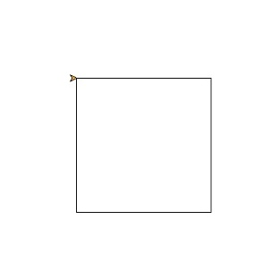
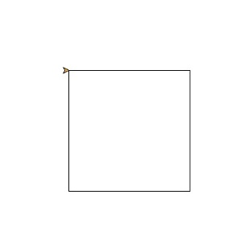

海龜範例 正方形
正方形有4個邊及4個角。當我們利用for迴圈重複4次，讓海龜重複前進與轉直角的動作，即可畫出正方形
📄 正方形 py4t程式碼
from 海龜模組 import *
for 數 in range(4) :
向前(200)
右轉(90)
💻 正方形 執行結果

正方形有4個邊及4個角。當我們利用for迴圈重複4次，讓海龜重複前進與轉直角的動作，即可畫出正方形
from 海龜模組 import *
for 數 in range(4) :
向前(200)
右轉(90)
